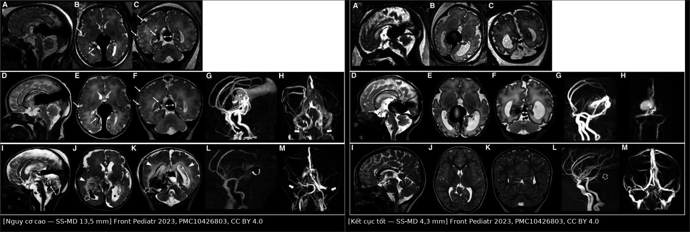
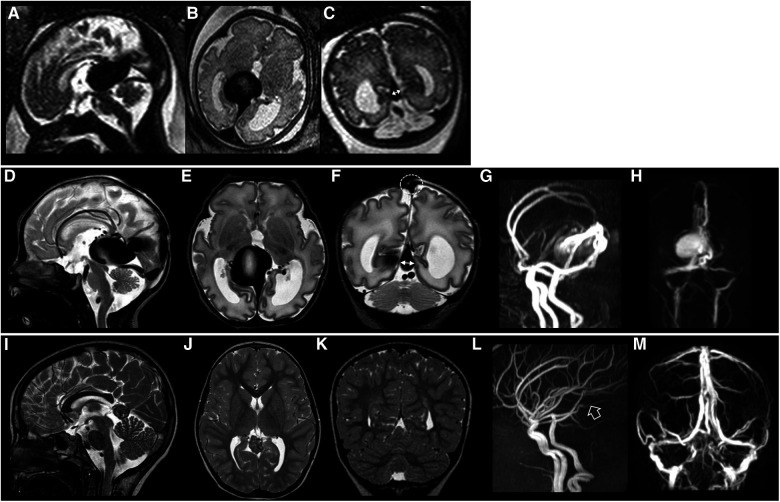
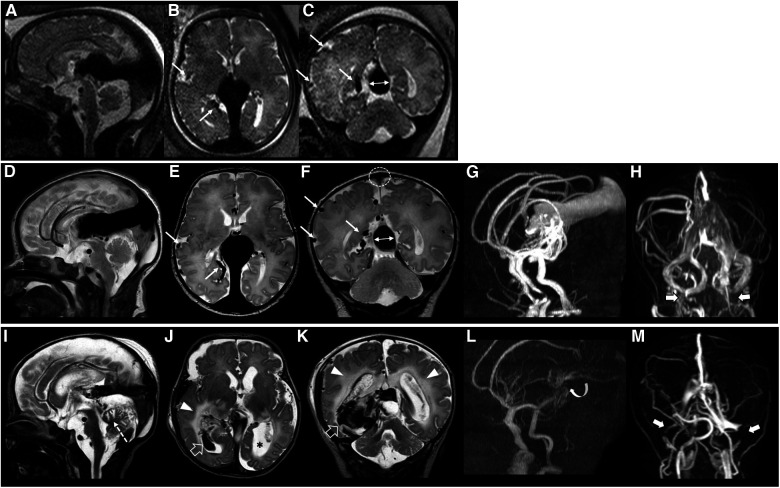
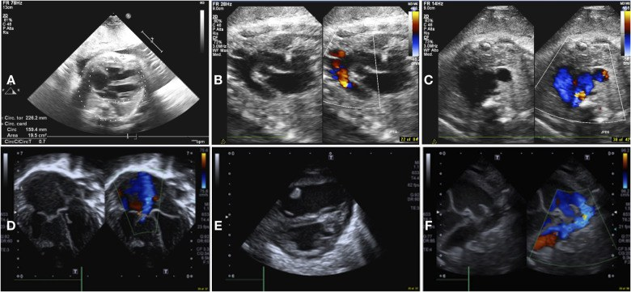
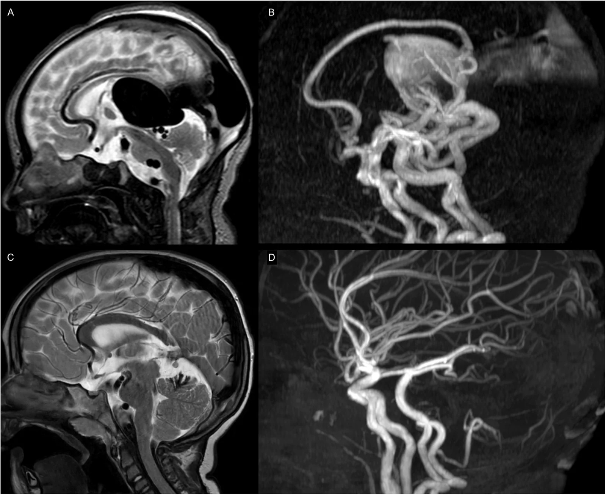

1786 — Dị dạng túi phình tĩnh mạch Galen ở sơ sinh: suy tim lưu lượng cao + túi giữa đường giữa / Vein of Galen aneurysmal malformation (VGAM)
Tags: pattern:shunt-toc-do-cao pattern:flow-void pattern:tui-tinh-mach pattern:nao-ung-thuy pattern:suy-tim-cung-luong-cao vung:nao vung:mach-nao vung:tim score:Bicetre score:SS-MD protocol:SA-thop protocol:MRI-MRA protocol:DSA protocol:sieu-am-tim
Mức chắc chắn (certainty): tổng hợp y văn (literature synthesis) — tổng quan hội nghị quốc tế 2025–2026 (Front Pediatr 2026, PMC13720373); loạt 40 sơ sinh có MRI/echo/điều trị nội mạch (Front Pediatr 2023, PMC10426803); phân tích gộp 400 bệnh nhân/339 ca can thiệp (Medicina 2024, PMC11676055). Không có thử nghiệm ngẫu nhiên; các ngưỡng đều là khuyến cáo từ đoàn hệ.
Câu chốt: VGAM không phải "nang lành tính của tĩnh mạch Galen" mà là shunt động–tĩnh mạch bẩm sinh giữa động mạch mạch màng mạch và tĩnh mạch trước não giữa Markowski chưa thoái triển → một túi tĩnh mạch khổng lồ giữa đường giữa. Trẻ đến với suy tim lưu lượng cao, không phải triệu chứng thần kinh. Ba câu hỏi ở mọi túi giãn lớn vùng Galen: (1) đây là VGAM thật hay chỉ là tĩnh mạch Galen giãn do AVM/AVF khác (VGAD)? (2) có suy tim cung lượng cao và tăng áp phổi không? (3) đường thoát tĩnh mạch có hẹp (xoang thẳng/bầu cảnh) và bán kính xoang thẳng (SS-MD) bằng bao nhiêu? Sai lầm hay gặp: gọi mọi túi giãn là VGAM rồi nút mạch một thì — trong khi VGAM cần nút mạch theo thì, tránh làm tắc đột ngột túi tĩnh mạch.
1. Tổng quan bệnh học – cơ chế hình ảnh
1.1 Phôi thai học: vì sao có "túi" thay vì "nidus"
- Tĩnh mạch trước não giữa của Markowski (median prosencephalic vein of Markowski) là tĩnh mạch phôi thai dẫn lưu hệ màng mạch; bình thường thoái triển và được thay bằng hệ Galen trưởng thành. Trong VGAM, tĩnh mạch này tồn tại và phình thành túi vì nhận trực tiếp máu từ động mạch màng mạch (choroidal arteries) mà không qua giường mao mạch (PMC10426803, PMC13720373).
- Vì vậy VGAM là shunt động–tĩnh mạch không có nidus (giống AVF), khác AVM não có nidus. Túi chính là tĩnh mạch dẫn lưu bị động mạch hoá, không phải khối u hay nang.
- Hai thể kinh điển: thể màng mạch (choroidal) — nhiều động mạch nuôi màng mạch, shunt lớn, thường biểu hiện sơ sinh; thể thành (mural) — ít cuống mạch hơn, thường biểu hiện nhũ nhi/trẻ lớn. Trong loạt 36 ca phân loại được, 83% là thể màng mạch (PMC10426803).
- Phổ bệnh, không phải hai cực rời: tổng quan 2026 nhấn mạnh nhiều tổn thương nằm giữa VGAM thật và VGAD (tĩnh mạch Galen giãn do AVM/AVF vùng đồi thị–trung não đổ vào) — cần mô tả động mạch nuôi và kiểu dẫn lưu, không chỉ đo túi (PMC13720373).
1.2 Dịch tễ và tiên lượng tự nhiên
- ~1/25.000 ca sinh; < 1% dị dạng mạch máu trẻ em nhưng là AVM nội sọ thường gặp nhất ở trẻ (PMC10426803).
- Không điều trị: tử vong 80–100% (PMC11676055). Nguyên nhân tử vong là suy tim/tăng áp phổi, không phải xuất huyết.
- Kết cục tốt tăng theo thời đại: 50% ở các đoàn hệ sơ sinh cũ → ~70% ở các nghiên cứu gần đây, tốt nhất khi điều trị sau giai đoạn sơ sinh; ~10% người sống có động kinh và/hoặc rối loạn phổ tự kỷ (PMC13720373).
1.2b Di truyền: không phải mọi VGAM đều có gen — nhưng gen đổi cách tầm soát
- Phần lớn VGAM lẻ tẻ, nhưng một phần có đột biến dòng mầm RASA1 hoặc EPHB4 — hai gen của CM-AVM (hội chứng mảng mao mạch – dị dạng động tĩnh mạch); nhiều ca vẫn chưa giải thích được gen (PMC13720373).
- Trong CM-AVM, VGAM gặp chủ yếu ở EPHB4 (66,7%), còn AVM có nidus gặp chủ yếu ở RASA1 — xem bài 746. Vì vậy trẻ có nhiều mảng đỏ quầng nhạt + VGAM cần khám da và xét nghiệm gen RASA1/EPHB4, đồng thời tầm soát tủy vì CM-AVM có thể có AVF màng mềm tủy.
- Đột biến soma trong nội mô túi (kể cả KRAS/EPHB4) đang được nghiên cứu qua sinh thiết nội lòng trong lúc nút mạch; chưa có liệu pháp đích được chứng minh cho VGAM (PMC13720373).
1.3 TẠI SAO hình ảnh và tim trông như vậy (vật lý + huyết động)
- Flow void trên MRI = proton chạy quá nhanh. Máu trong túi và tĩnh mạch dẫn lưu đạt vận tốc cao, rối loạn; phần lớn spin rời mặt cắt giữa kích thích và thu tín hiệu → mất tín hiệu trên T2/TOF, không cần cản quang. Vì thế T2 là chuỗi đầu tay ở sơ sinh (không cần gây mê sâu, không cần thuốc cản quang).
- Túi sáng trên MRA vì "máu mới vào" và tĩnh mạch dẫn lưu hiện thì động mạch = bằng chứng shunt không có giường mao mạch. 4D-flow MRI định lượng được lưu lượng shunt và mức giảm sau nút mạch (PMC13720373).
- Tim là "đầu cuối" của shunt: mỗi mL máu qua túi quay về tim ngay → tăng tiền tải, giãn buồng tim phải, tăng áp phổi. Trước sinh, nhau thai (tuần hoàn trở kháng thấp, dung tích lớn) bảo vệ thai; sau sinh, mất tuần hoàn nhau thai + giảm trở kháng phổi → quá tải phổi, cướp máu hệ thống, suy tim cấp (PMC13720373, PMC10426803).
- Suy tim cung lượng cao (high-output heart failure, HOHF) không chỉ là "tim to": loạt 40 sơ sinh có 52,5% HOHF, 42,5% HOHF nặng phải can thiệp sớm, 55% cần thở máy xâm lấn, 12,5% dùng PGE1 giữ ống động mạch (PMC10426803).
- Giãn não thất trong VGAM không phải "nang chèn ép" đơn thuần: chủ yếu do tăng áp lực tĩnh mạch làm giảm hấp thu dịch não tủy, cộng thêm chèn ép cống não bởi túi; hẹp xoang dọc trên 58% và hẹp bầu tĩnh mạch cảnh 55,6% trong loạt 40 ca (PMC10426803).
- SS-MD (straight-sinus mediolateral diameter) — bán kính ngang xoang thẳng/chân xoang ở chỗ hẹp nhất — phản ánh áp lực và lưu lượng tĩnh mạch: loạt 40 ca có SS-MD trung bình 8,26 ± 3,73 mm; nhóm HOHF nặng có SS-MD sơ sinh 10,77 mm (thai 11,74 mm), dự báo nguy cơ bằng mô hình Arko 96–98% (PMC10426803). Tổng quan 2026 dùng falcine sinus ≥ 7 mm làm tiêu chuẩn vào phác đồ nút mạch thai nhi (PMC13720373).
- Pseudofeeders — các nhánh động mạch não giữa giãn bất thường ở rãnh Sylvius, không thuộc hệ màng mạch — là dấu của cướp máu động mạch nặng và tăng áp tĩnh mạch, gặp 39% loạt sơ sinh và liên quan tổn thương chất trắng (PMC10426803).
1.4 Bảng số liệu trụ cột
| Đại lượng | Con số | Nguồn |
|---|---|---|
| Tần suất | ~1/25.000 ca sinh; < 1% dị dạng mạch trẻ em | PMC10426803 |
| Tử vong không điều trị | 80–100% | PMC11676055 |
| Phân tích gộp | 400 bệnh nhân, 339 ca nút mạch, 380 thủ thuật | PMC11676055 |
| Số thì nút mạch | trung bình 2,1 thì/bệnh nhân (1–7); thể màng mạch 2,6 vs thể thành 1,4 | PMC11676055 |
| Tắc hoàn toàn | 62,3% (177/284); tắc một phần 37,7% | PMC11676055 |
| Biến chứng | 32,1% bệnh nhân; 22,9% mỗi thủ thuật | PMC11676055 |
| Tử vong sau nút mạch | 7,1% (24/339) | PMC11676055 |
| Kết cục chức năng tốt | 68% (189/278) | PMC11676055 |
| Loạt 40 sơ sinh | HOHF 52,5%, HOHF nặng 42,5%, tử vong sơ sinh 18%, tử vong sau can thiệp 14% của 22 ca điều trị | PMC10426803 |
| Di chứng hình ảnh | giãn não thất 33%, hẹp xoang dọc 58%, hẹp bầu cảnh 55,6%, pseudofeeders 39% | PMC10426803 |
| Kết cục sống | 75% POPC 1–2 (bình thường/khuyết tật nhẹ) | PMC10426803 |
2. Mẫu hình + chẩn đoán phân biệt theo vị trí (gamut)
2.1 Ba mẫu hình lâm sàng – hình ảnh theo tuổi
- Sơ sinh (0–28 ngày): "túi giữa đường giữa + suy tim". Tím/khó thở, gallop, gan to, thở máy; X-quang ngực tim to + ứ máu phổi; siêu âm thóp cấu trúc giãn lớn giữa đường giữa có dòng chảy xoáy. Đây là thể màng mạch điển hình.
- Nhũ nhi (1–12 tháng): "đầu to + giãn não thất". Tăng chu vi đầu, thóp căng, chậm phát triển, co giật; MRI thấy túi lớn + giãn não thất + tĩnh mạch dẫn lưu giãn.
- Trẻ lớn/người lớn: "đau đầu, chảy máu, hoặc tình cờ". Có thể SAH/ICH, đau đầu mạn, giảm thị lực; túi có thể huyết khối một phần.
2.2 Gamut theo hình thái túi giữa đường giữa
- VGAM thật (thể màng mạch): túi lớn, nhiều cuống màng mạch, dẫn lưu qua xoang thẳng ± xoang chân bướm, thường có hẹp bầu cảnh; sơ sinh suy tim.
- VGAM thật (thể thành): ít cuống hơn, thành túi nhận 1–2 nhánh màng mạch/đồi thị; biểu hiện muộn hơn, suy tim nhẹ hơn.
- VGAD (vein of Galen aneurysmal dilatation): tĩnh mạch Galen giãn thứ phát do AVM/AVF đồi thị–trung não–mái trung não đổ vào; có nidus và động mạch nuôi kiểu AVM. Điều trị theo AVM, không phải "nút túi".
- AVF màng mềm (pial AVF): shunt trực tiếp không nidus, thường một cuống; có thể gặp trong CM-AVM (RASA1/EPHB4) — xem bài 746.
- AVF màng cứng quanh torcular: thường ở người lớn/trẻ lớn, dẫn lưu xoang; khác VGAM.
- Không phải mạch máu: nang màng nhện vùng Galen, cavum velum interpositum giãn, nang tuyến tùng, u tuyến tùng — không có flow void, không có shunt thì động mạch.
2.3 Mnemonic "3S" cho VGAM có triệu chứng
- Shunt tốc độ cao (flow void, tĩnh mạch dẫn lưu sớm) · Sac giữa đường giữa (túi Markowski) · Suy tim cung lượng cao. Thiếu một trong ba → xem lại chẩn đoán hoặc tìm thể VGAD.
3. Bảng so sánh phân biệt (ma trận đối chiếu)
| Thực thể (entity) | Hình ảnh điển hình | Chốt vào (rule-in) | Chốt loại (rule-out) | Gợi ý xác nhận |
|---|---|---|---|---|
| VGAM thể màng mạch | Túi lớn giữa đường giữa, nhiều cuống màng mạch, xoang thẳng giãn, hẹp bầu cảnh, sơ sinh tim to | Sơ sinh + suy tim + túi Markowski + flow void | Có nidus đồi thị rõ + động mạch nuôi kiểu AVM → VGAD | MRI/MRA + siêu âm tim; DSA trước nút |
| VGAM thể thành (mural) | Túi nhỏ hơn, 1–2 cuống, thường nhũ nhi/trẻ lớn | Túi + ít cuống + không suy tim nặng | Nhiều cuống màng mạch + suy tim sơ sinh → thể màng mạch | DSA xác định số cuống |
| VGAD do AVM/AVF | Nidus đồi thị/trung não/mái + tĩnh mạch Galen giãn thứ phát | Thấy nidus + cuống AVM | Không nidus, túi là tĩnh mạch Markowski → VGAM | DSA 3D; MRI T2/TOF |
| AVF màng mềm (pial AVF) | Shunt trực tiếp một cuống, không nidus, thường kèm CM-AVM | Một cuống + không nidus + mảng da quầng nhạt | Túi giữa đường giữa đơn thuần → VGAM | Gen RASA1/EPHB4; DSA |
| AVF màng cứng torcular | Cuống từ động mạch màng cứng đổ vào xoang, thường trẻ lớn/người lớn | Cuống màng cứng + dẫn lưu xoang | Shunt màng mạch ở sơ sinh → VGAM | DSA chọn lọc động mạch màng cứng |
| Nang màng nhện / cavum velum interpositum | Ổ dịch giữa đường giữa, không flow void, không ngấm thuốc | Tín hiệu dịch đồng nhất, không mạch | Có flow void + tĩnh mạch dẫn lưu sớm → shunt | MRI T1/T2 ± CISS; không cần DSA |

Trái: thai/sơ sinh SS-MD 13,5 mm, pseudofeeders từ động mạch não giữa, hẹp xoang dọc trên (SSS index 2,2) — kết cục xấu. Phải: SS-MD 4,3 mm, không hẹp xoang dọc (SSS index 3,3), không hẹp bầu cảnh — kết cục tốt sau 8 năm. Ảnh ghép letterbox từ Front Pediatr 2023 (PMC10426803), CC BY 4.0.
Cùng chuỗi MRI thai–sơ sinh–8 năm ở một ca SS-MD 4,3 mm, không hẹp xoang dọc, không hẹp bầu cảnh: túi vẫn lớn nhưng đường thoát tĩnh mạch tốt — minh họa vì sao SS-MD và hẹp đường ra, chứ không chỉ kích thước túi, mới quyết định tiên lượng. Nguồn: Front Pediatr 2023 (PMC10426803), Fig. 3, CC BY 4.0.3.1 Ba dấu hiệu định vị trên MRI sơ sinh
- Dấu 1 — túi Markowski: cấu trúc giãn lớn giữa đường giữa, tín hiệu flow void trên T2, nối trực tiếp xoang thẳng.
- Dấu 2 — tĩnh mạch dẫn lưu "động mạch hoá": xoang thẳng/torcular giãn sớm, có khi hẹp bầu cảnh cùng bên.
- Dấu 3 — tổn thương nhu mô: giãn não thất, mất thể tích vỏ, tăng T2 chất trắng do thiếu máu/tăng áp tĩnh mạch; không hạn chế khuếch tán nếu mạn (khác nhồi máu cấp).
4. Protocol chụp + hệ phân độ/điểm chuẩn hóa
4.1 Trước sinh
- Siêu âm thai: đường kính túi, tỉ lệ tim–ngực, giãn tĩnh mạch chủ trên, dòng ngược thì tâm trương ở eo động mạch chủ, hẹp xoang thẳng. Trong loạt 40 ca, chỉ tỉ lệ tim–ngực liên quan HOHF nặng (p = 0,01) và tử vong (p = 0,02) (PMC10426803).
- MRI thai khi siêu âm nghi ngờ: xác định túi, SS-MD, pseudofeeders, tổn thương não; falcine sinus ≥ 7 mm là tiêu chuẩn vào phác đồ nút mạch thai nhi ban đầu (PMC13720373).
- Tư vấn: không có một dấu hiệu đơn lẻ nào dự báo chắc chắn; cần mô hình đa thông số (tim mạch + giải phẫu + thần kinh) (PMC13720373).
4.2 Sau sinh — thứ tự bắt buộc
- Siêu âm thóp + Doppler xuyên sọ tại giường (không gây mê): túi, dòng xoáy, tĩnh mạch dẫn lưu, giãn não thất.
- Siêu âm tim ngay: giãn buồng phải, hở ba lá, dẹt vách liên thất, shunt phải–trái qua ống động mạch; đo áp lực phổi.
- MRI/MRA não (T1, T2, FLAIR, DWI/ADC, TOF, MRA): xác định túi, cuống, dẫn lưu, SS-MD, tổn thương chất trắng, giãn não thất. 4D-flow nếu có để định lượng shunt.
- DSA là chuẩn vàng và bắt buộc trước nút mạch: số cuống, nguồn màng mạch, kiểu dẫn lưu sâu, hẹp đường ra, giả phình/túi phình liên quan.
- CT chỉ dùng khi cấp cứu/chấn thương/nghi xuất huyết, hoặc khi MRI không khả thi.
4.3 Đo và ghi vào báo cáo (checklist 7 mục)
- Đường kính túi (mm) và thể tích túi; có huyết khối trong túi không.
- SS-MD (mm) tại chỗ hẹp nhất của xoang thẳng/chân xoang; SSS index; có hẹp bầu cảnh một/hai bên.
- Số cuống + nguồn (màng mạch trước/giữa/sau, động mạch não giữa, động mạch não trước).
- Kiểu dẫn lưu: xoang thẳng, xoang chân bướm, tĩnh mạch não trong, torcular; có hẹp đường ra.
- Pseudofeeders và mức cướp máu; tổn thương chất trắng (T2/FLAIR), nhồi máu, xuất huyết.
- Giãn não thất và dấu hiệu tăng áp nội sọ.
- Tim: chức năng thất phải, áp lực phổi, shunt ống động mạch, nhu cầu inotrope (VIS).
4.4 Thang điểm Bicêtre và giới hạn hiện tại
- Bicêtre neonatal evaluation score (BNES) chấm 5 hệ: tim, não, hô hấp, gan, thận; điểm 8–12 mô tả bệnh nhân ổn định, cần theo dõi sát trước khi nút mạch (PMC11676055).
- Giới hạn: BNES không có thông số hình ảnh (không phản ánh tổn thương nhu mô, SS-MD, pseudofeeders) và không dùng được ngoài giai đoạn sơ sinh; nhiều trung tâm hiện không dùng ngưỡng cứng của BNES để quyết định điều trị hay chăm sóc giảm nhẹ, vì suy tim nặng có thể hồi phục sau khi ổn định và nút mạch (PMC11676055, PMC10426803, PMC13720373).
- Hệ quả thực hành: BNES là một đầu vào, không phải quyết định cuối; phải cộng siêu âm tim, MRI (SS-MD, tổn thương não) và đáp ứng với điều trị nội khoa.
4.5 Phân tầng và can thiệp
flowchart TD
A[Túi giãn lớn giữa đường giữa trên siêu âm thóp] --> B[Siêu âm tim + Doppler xuyên sọ]
B --> C{Có suy tim cung lượng cao nặng?}
C -->|Có| D[Ổn định: thở máy, inotrope, tránh giãn mạch phổi]
C -->|Không| E[MRI/MRA + theo dõi]
E --> F{DSA: VGAM hay VGAD?}
D --> F
F -->|VGAM| G[Đo SS-MD, cuống, đường ra tĩnh mạch]
F -->|VGAD hoặc AVM| H[Điều trị theo AVM: nút mạch ± mổ ± xạ phẫu]
G --> I{BNES + toàn cảnh}
I -->|Ổn định, không cấp| J[Trì hoãn tới 4-6 tháng nếu được]
I -->|Suy tim kháng trị| K[Nút mạch sớm theo thì]
J --> K
K --> L[Nút mạch từng thì, ưu tiên đường động mạch]
L --> M[DSA kiểm tra + MRI/echo theo dõi]
- Nguyên tắc nút mạch: từng thì, ưu tiên đường động mạch (transarterial); không làm tắc đột ngột toàn bộ túi tĩnh mạch một thì vì nguy cơ xuất huyết/tắc tĩnh mạch não. Đường tĩnh mạch chỉ khi cuống động mạch không tiếp cận được và phải bảo tồn dẫn lưu sâu (PMC11676055, PMC13720373).
- Vật liệu: keo nBCA/glue chiếm 77,3%, coil 13,3%, phối hợp 9,4%; nBCA 56,3% trong nhóm dùng keo (PMC11676055).
- Số thì: trung bình 2,1 (1–7); thể màng mạch 2,6 vs thể thành 1,4 → thể màng mạch cần nhiều thì hơn.
- Mục tiêu: không nhất thiết tắc hoàn toàn ngay; mục tiêu là kiểm soát suy tim và ngăn tiến triển thần kinh; tắc hoàn toàn đạt 62,3% trong phân tích gộp.
- Trì hoãn có kiểm soát: nếu ổn định, nhiều tác giả khuyến cáo thì đầu tiên vào khoảng 4–6 tháng tuổi để giảm nguy cơ tổn thương mạch do catheter quá lớn ở sơ sinh (PMC11676055).
- Nút mạch thai nhi là hướng thí điểm, chưa đủ bằng chứng hiệu quả (PMC13720373).
5. Biến thể bình thường và cạm bẫy
- Biến thể bình thường #1 — tĩnh mạch Galen nổi: ở trẻ/người lớn, tĩnh mạch Galen có thể hơi nổi trên T2; không giãn lớn, không flow void mạnh, không tĩnh mạch dẫn lưu sớm → không phải VGAM.
- Biến thể bình thường #2 — cavum velum interpositum / nang màng nhện vùng Galen: ổ dịch đồng tín hiệu dịch, không có mạch; đừng đo "túi" rồi kết luận shunt. So sánh T1/T2 và không thấy flow void là chốt loại.
- Cạm bẫy #1 — gọi VGAD là VGAM. Tĩnh mạch Galen giãn do AVM đồi thị/trung não có nidus + động mạch nuôi kiểu AVM; nút "túi" sẽ bỏ sót nidus và có thể gây xuất huyết. Luôn mô tả có nidus hay không.
- Cạm bẫy #2 — bỏ qua hẹp đường ra tĩnh mạch. Hẹp bầu cảnh 55,6%, hẹp xoang dọc 58% trong loạt sơ sinh; hẹp nặng làm tăng áp nội sọ và là yếu tố tiên lượng, có thể cần nong/stent chọn lọc (PMC10426803, PMC13720373).
- Cạm bẫy #3 — pseudofeeders bị đọc là "mạch bình thường". Chúng là dấu của cướp máu nặng, gặp 39% và liên quan tổn thương chất trắng; thấy pseudofeeders = chỉ định can thiệp sớm trong nhiều phác đồ (PMC10426803).
- Cạm bẫy #4 — "flow void = huyết khối". Huyết khối trong túi có thể tăng T1/T2 và mất flow void; VGAM đã huyết khối một phần trông "đặc" hơn. Đối chiếu MRA/DSA, đừng loại trừ shunt chỉ vì một vùng không có flow void.
- Cạm bẫy #5 — dùng BNES thấp để chăm sóc giảm nhẹ. Suy tim do shunt có thể hồi phục sau ổn định + nút mạch; nhiều ca HOHF nặng vẫn đạt POPC 1–2 (75% người sống). Quyết định phải đa chuyên khoa (PMC10426803).
- Cạm bẫy #6 — bỏ sót giãn não thất. Giãn não thất 33%; ở sơ sinh, "đầu to" có thể là dấu hiệu duy nhất. Luôn đo não thất và tìm hẹp xoang.
6. Tự lượng giá — Blind Quiz
Ca 1 — Sơ sinh 2 ngày tuổi, suy hô hấp, tim to trên X-quang. Nhìn 3 lát MRI trước, mô tả trước khi mở đáp án.

- Gợi ý lâm sàng: thở máy, gallop, gan to; không co giật.
- Câu hỏi: Cấu trúc giãn lớn giữa đường giữa là gì? Có dấu hiệu shunt tốc độ cao không? SS-MD và hẹp xoang gợi ý điều gì?
Bấm để hiện đáp án (findings + chẩn đoán)
- Findings: túi lớn giữa đường giữa (tĩnh mạch Markowski) với flow void; pseudofeeders từ động mạch não giữa (mũi tên mảnh); SS-MD 13,5 mm (mũi tên hai đầu); hẹp xoang dọc trên (vòng chấm), SSS index 2,2; MRA thấy cuống màng mạch và dẫn lưu sớm.
- Chẩn đoán: VGAM thể màng mạch, nguy cơ cao, suy tim cung lượng cao.
- Vì sao: SS-MD lớn phản ánh lưu lượng/áp lực tĩnh mạch cao; pseudofeeders = cướp máu; hẹp xoang dọc làm nặng tăng áp nội sọ.
- Nguồn ảnh: Front Pediatr 2023 (PMC10426803), Fig. 2, CC BY 4.0.
Ca 2 — Sơ sinh cùng loạt, siêu âm tim trước và sau sinh. Nhìn 6 ô, mô tả trước.

- Câu hỏi: Những dấu hiệu nào chứng minh suy tim cung lượng cao? Hướng xử trí đầu tiên?
Bấm để hiện đáp án (findings + chẩn đoán)
- Findings: (A) tỉ lệ tim–ngực tăng, (B) dòng ngược thì tâm trương ở eo động mạch chủ, (C) giãn tĩnh mạch chủ trên; sau sinh: (D) giãn buồng phải + hở ba lá, (E) dẹt vách liên thất, (F) shunt phải–trái qua ống động mạch.
- Chẩn đoán: suy tim cung lượng cao do VGAM, tăng áp phổi.
- Xử trí: ổn định huyết động (thở máy, inotrope, tránh giãn mạch phổi), không trì hoãn DSA/nút mạch nếu suy tim kháng trị; PGE1 chỉ khi quá tải thất phải nặng.
- Nguồn ảnh: Front Pediatr 2023 (PMC10426803), Fig. 1, CC BY 4.0.
Ca 3 — Sơ sinh nặng, 4 lần nút mạch; so sánh lúc sinh và 3 tuổi.

- Câu hỏi: Trước điều trị có gì? Sau 4 thì thay đổi ra sao? Vì sao phải chụp lại nhiều lần?
Bấm để hiện đáp án (findings + chẩn đoán)
- Findings: (A,B) sơ sinh: shunt tốc độ cao + giãn lớn tĩnh mạch trước não giữa, xoang thẳng và torcular; (C,D) sau 4 thì nút mạch ở 3 tuổi: tắc gần hoàn toàn, giải phẫu mạch gần bình thường.
- Chẩn đoán: VGAM thể nặng — kiểm soát bằng nút mạch theo thì.
- Vì sao chụp lại: VGAM tái thông/tái cấp máu sau nút mạch; cần DSA/MRA định kỳ để phát hiện shunt tồn dư và đánh giá não đang phát triển.
- Nguồn ảnh: Front Pediatr 2026 (PMC13720373), Fig. 1, CC BY 4.0.
Bài liên quan chéo
- 746 – CM-AVM (RASA1/EPHB4): mảng mao mạch + shunt não–tủy — vGaM là hàng đầu trong CM-AVM2 (EPHB4 66,7%).
- 745 – HHT ở trẻ: tầm soát AVM phổi–não — phân biệt VGAM với AVM/PAVM của HHT.
- 741 – Dị dạng mạch máu đầu–cổ ở trẻ: ISSVA, PHACE & LUMBAR — phân loại shunt nhanh/chậm dòng.
- 216 – Dị dạng mạch não & huyết khối xoang — nền tảng AVM/AVF và CVST.
- 1787 – AVM não ở trẻ đã vỡ: phân tầng cấp cứu — thể AVM có nidus, khác VGAM.
- 200 – Tổng quan hệ Thần kinh · 600 – Tổng quan Nhi khoa
Ảnh
- Tên file:
1786_vgam_<chuỗi>_<nguồn>.jpg; nguồn + giấy phép từng ảnh ởimages/CREDITS.md. - Ảnh CC BY 4.0: dùng nguyên bản hoặc ghép composite (PMC10426803, PMC13720373).
- Không có ảnh nào cần dẫn link thay thế trong lượt này.
Không dùng để chẩn đoán độc lập khi chưa có người hướng dẫn.